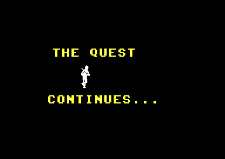

01 · The music key
F1 pauses the tune in place
Press F1 during play and the screen keeps moving while the tune falls silent. Press it again and the tune continues where it stopped. The key changes whether the interrupt calls the tune player. On mute, the game also clears the SID’s voice and filter registers. The track’s counters stop advancing until the next press.
02 · The speed keys
Shift changes the speed of play
Hold Shift and press the C64’s plus key to speed up play. Shift and minus slow it down. The keys change how long CIA 1 waits between game ticks. In a 24-frame Wastelands test, the default timer gave 25 ticks. Holding Shift and minus gave 18 and holding Shift and plus gave 58.
03 · Room transitions
The chapter exit is a room number
An ordinary screen exit packs the next room and the entrance into one byte. When the room number is zero, the game sets the flag that starts the next tape load. The same boundary code can lead to another room or end a chapter.
Browse the exits and their destinations. See how the game decodes the destination at $74F5.
04 · The Dungeons driver
A Dungeons pitch sweep restores the wrong countdown
The Dungeons tune can borrow a new pitch step for a few ticks. The driver loads the old countdown into Y. The next instruction saves A, which still holds the high byte of the pitch step. When the sweep ends, that byte goes back into the countdown. In a test of the original routine, a countdown of 31 changed to 22 for the temporary sweep and returned as 7.
See which register the save uses at $BADF. Follow the restore at $BB10.
05 · The ending
The scrolls start a final pose sequence
Taking the scrolls in the Inner Sanctum starts a scripted sequence. Its last event fades the room to black, draws the two lines of the closing message, then dissolves the ninja sprite and the bitmap.

See what starts the final pose at $BF99. Follow the closing card at $4C98.